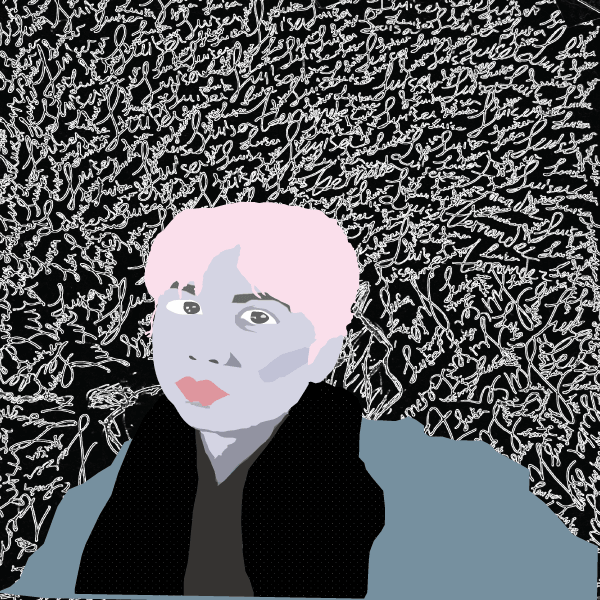
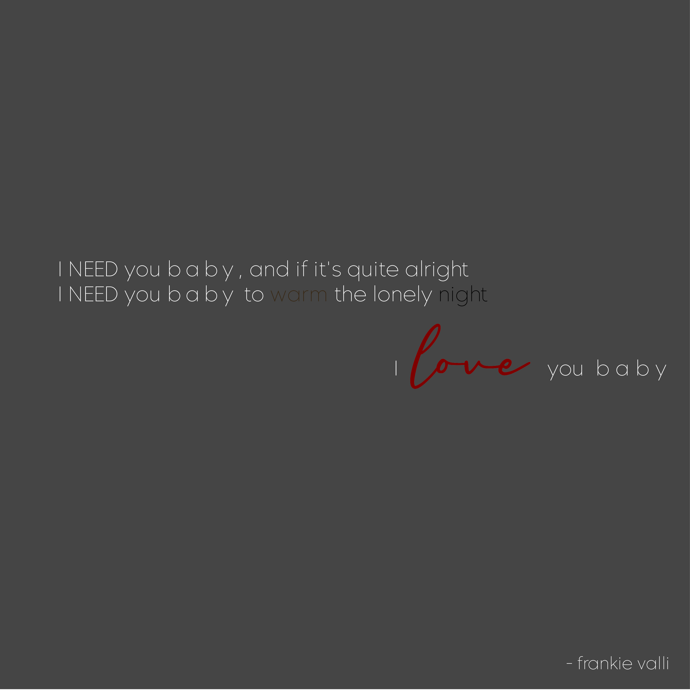
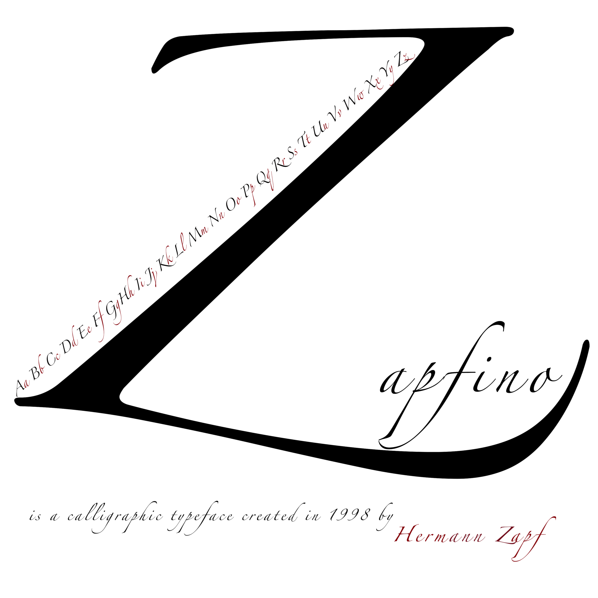

Portfolio
Please enjoy the different projects utilizing adobe application. Below you would see work with Photoshop, Illustrator, InDesign, and After Effects.
Vector's Project

GIF Animation's Project

10-sec Animation's Project
Quote Design

Typographic Poster

Magazine Layout Recreation